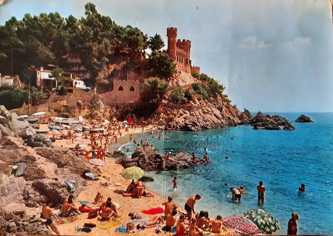
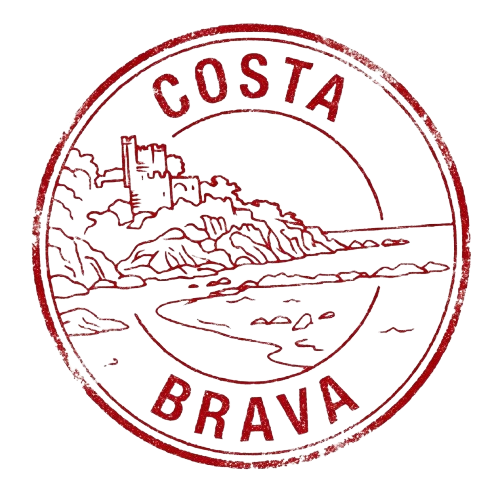
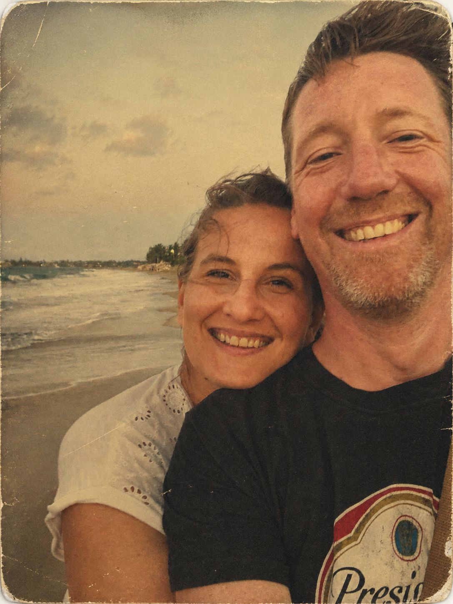

OUR LOVE STORY
Our Weekend
in Lloret de Mar
Two versions of the same magical beginning. How Nataliya saw it. How Robert saw it. Both paths led to the same beautiful destination — each other.



A love story written in Barcelona
Nataliya — Her Version
"Recuerdo la primera vez que vi a Robert entrar en el bar de Barcelona donde yo trabajaba como camarera. Yo estaba fumando (por entonces fumaba) y él era el último de los cuatro hombres que desfilan hacia el bar. El primero era Ashley Scott, después John Dickinson, Martin Williams y por último Robert Daniel Brown. Qué chico tan guapo y tímido pensé, ya que Robert me miró con esos ojos asustadizos que tiene y os juro que el tiempo se paralizó entonces. Puedo recetar perfectamente la imagen en la cabeza: los pantalones cortos en marzo (tan guiri), el 'Hola' tan entusiasta de los británicos cuando aprenden una palabra extranjera, y una sonrisa brillante!
Entraron en el bar y les puse cuatro cervezas calientes (la nevera nunca funcionaba en ese bar). Y empecé a observar a esos cuatro individuos: qué gente tan ruidosa pensé, menos el chico tímido, que se mantenía en silencio echando miraditas hacia mí.
Después de aquel día volvió otra vez, a pesar de la cerveza caliente, me comentó que se había comprado un piso cerca y lo estaba reformando. 'No tengo ducha todavía', me dijo y yo no quise decirle que me había fijado.
Muchas cervezas calientes después y muchas conversaciones tras la barra, Robert me pidió una cita y yo le dije que no. (Yo soy una chica muy difícil)
Pero lo esperaba, cada vez que él llegaba al bar y arrastraba a sus amigos a beber cervezas insípidas, a mí se me iluminaba la cara. Al enviarle tantas señales confusas, Robert volvió a intentarlo: envió a una amiga para invitarme a un hike por Sitges. (Les dije que no, no por orgullo, creo que tenía algo importante en la universidad aquel día)
'¡A la tercera le digo que sí!' pensé y esperé y esperé a que Robert me volviera a pedir para salir. Pero no solo no volvió a pedirme para salir sino que dejó de ir al bar.
Yo cada fin de semana me ponía cada vez más guapa, con los labios más rojos y los vestidos más bonitos, pero él no volvía.
'Qué tonta soy ¿Y si era el amor de mi vida?'
Pues resulta que sí, al final aquel chico del bar era el amor de mi vida."
"I remember the first time I saw Robert walk into the bar in Barcelona where I was working as a waitress. I was smoking (back then I smoked) and he was the last of four men marching towards the bar. First was Ashley Scott, then John Dickinson, Martin Williams and finally Robert Daniel Brown. What a handsome and shy boy I thought, as Robert looked at me with those shy eyes he has and I swear time stood still. I can perfectly picture the image in my head: the shorts in March (so foreign), the enthusiastic 'Hola' that British people say when they learn a foreign word, and a bright smile!
They came into the bar and I gave them four warm beers (the fridge never worked in that bar). And I started observing those four individuals: so noisy I thought, except for the shy boy, who remained silent stealing glances at me.
After that day he came back, despite the warm beer, he told me he had bought an apartment nearby and was renovating it. 'I don't have a shower yet,' he said and I didn't want to tell him I had noticed.
Many warm beers later and many conversations behind the bar, Robert asked me for a date and I said no. (I am a difficult girl)
But I waited for him, every time he came to the bar and dragged his friends to drink bland beers, my face would light up. After sending so many confusing signals, Robert tried again: he sent a friend to invite me on a hike to Sitges. (I said no, not out of pride, I think I had something important at university that day)
'Third time's the charm!' I thought and waited and waited for Robert to ask me out again. But not only did he not ask me out again, he stopped coming to the bar.
Every weekend I would make myself more beautiful, with redder lips and prettier dresses, but he didn't come back.
'How foolish I am, what if he was the love of my life?'
Well it turns out yes, in the end that boy from the bar was the love of my life."
Robert — His Version
"In June 2015 three friends and myself decided impulsively to take a road trip around Europe (those three friends will be at the wedding of course: Ashley Scott, Martin Williams, and John Dickinson.) For reasons I don't recall we ended up drinking at a bar in El Born, a pretty dreadful bar in most respects, but enlightened by the sullen charm of a tall attractive bartender by the name of Nataliya. For the remainder of our trip my friends would question my strange desire to return to 'bar bar' as we named it, due to the neon light over the door that simply said 'Bar' — questioned more so as my clumsy attempts at seducing said bartender resulted in cold rejection each time.
So taken I was by Barcelona (and perhaps by a certain bartender) that I wanted to stay once our trip was over. I had one problem however: my car which I had driven a little spiritedly across France was currently languishing in La Rochelle with a blown engine and awaiting shipping back to the UK.
Necessary repairs completed I jumped in the car and drove back to Barcelona and had in no time at all secured the purchase of a dilapidated wreck of an apartment, devoid of water and power and necessitating my use of the local gym for showering and other facilities. Each evening after long days of lugging materials up 4 floors to facilitate the renovation of my apartment I would pop to bar bar to hydrate myself with warm beer and cold company.
Renovation funds and romantic advances depleted I then returned to UK for a while, returned sometime later while discovering a Facebook message from that previously unreceptive bar girl from El Born. Well that was enough to cement my decision to remain, and the rest, as they say, is history."
"En junio de 2015, tres amigos y yo decidimos impulsivamente hacer un viaje por carretera por Europa (esos tres amigos estarán en la boda, por supuesto: Ashley Scott, Martin Williams y John Dickinson). Por razones que no recuerdo, terminamos bebiendo en un bar en El Born, un bar bastante horrible en muchos aspectos, pero iluminado por el encanto hosco de una camarera alta y atractiva llamada Nataliya. Durante el resto de nuestro viaje, mis amigos cuestionarían mi extraño deseo de volver al 'bar bar' como lo llamábamos, debido a la luz de neón sobre la puerta que simplemente decía 'Bar' — cuestionado aún más porque mis torpes intentos de seducir a dicha camarera resultaron en un frío rechazo cada vez.
Tan cautivado estaba por Barcelona (y quizás por cierta camarera) que quise quedarme una vez que nuestro viaje terminó. Sin embargo, tenía un problema: mi coche, que había conducido un poco alegremente por Francia, estaba languideciendo en La Rochelle con el motor fundido y esperando ser enviado de vuelta al Reino Unido.
Completadas las reparaciones necesarias, me subí al coche y conduje de regreso a Barcelona y en poco tiempo aseguré la compra de un apartamento ruinoso y destartalado, sin agua ni electricidad, lo que me obligaba a usar el gimnasio local para ducharme y otras necesidades. Cada noche, después de largos días de cargar materiales hasta el cuarto piso para facilitar la renovación de mi apartamento, pasaba por el bar bar para hidratarme con cerveza tibia y compañía fría.
Con los fondos de renovación y los avances románticos agotados, regresé al Reino Unido por un tiempo, volví algún tiempo después mientras descubría un mensaje de Facebook de esa chica del bar de El Born que antes no me correspondía. Bueno, eso fue suficiente para cimentar mi decisión de quedarme, y el resto, como dicen, es historia."